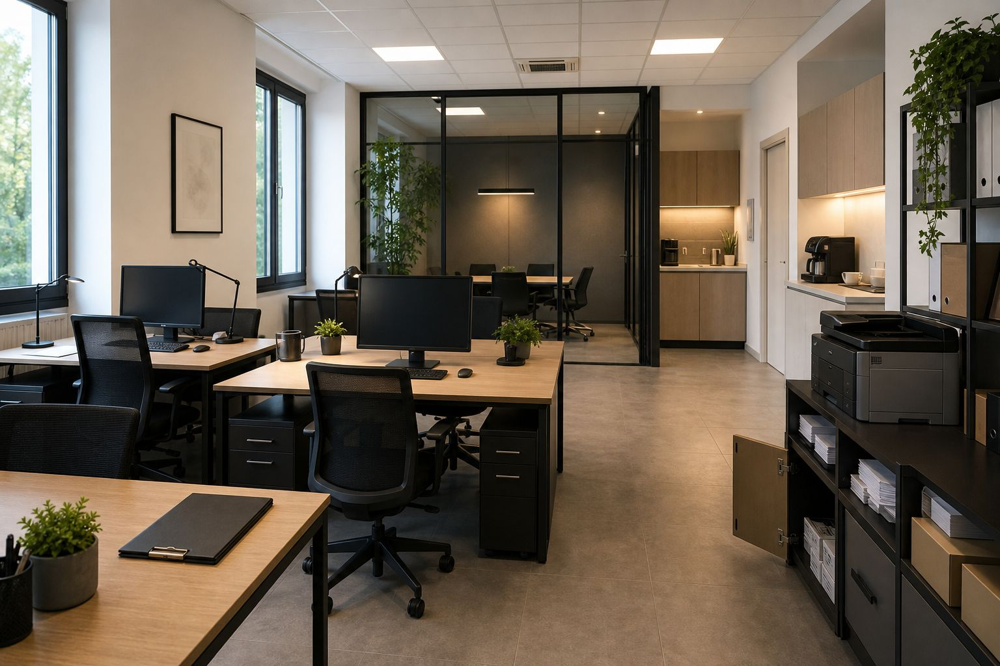
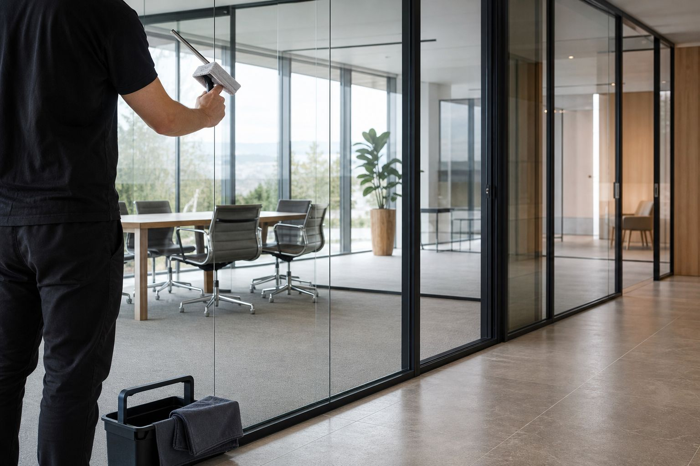
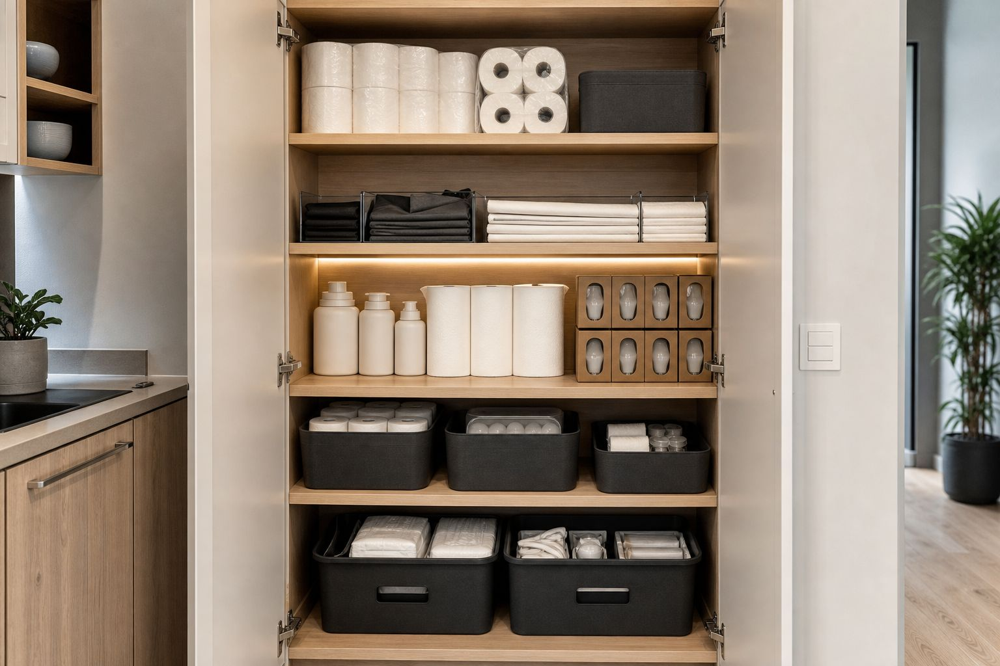

FM Coop segue uffici, studi professionali e ambienti di lavoro su tutto il lato pratico: ambienti in ordine, consumabili mai finiti, piccoli guasti risolti durante il giro. La seconda telefonata non la fai.
Un referente, un numero, una fattura. Lavoriamo tra Bergamo, Brescia, Milano, Val Seriana e Lago di Garda.

Le fasce le concordiamo con te: presto la mattina, la sera, nel fine settimana. Il programma del giorno dopo lo prepariamo la sera prima, così nessuno passa l'aspirapolvere mentre sei al telefono con un cliente.
Il fuori programma capita: una perdita in bagno, una sala riunioni da preparare per le 15 quando lo scopri alle 12. Ci trovi 7 giorni su 7. E a entrare sono sempre le stesse persone: chiavi e allarme non passano di mano ogni mese.
"Il cliente entra, guarda l'ingresso e si fa un'idea di te. L'ha già fatta prima di sedersi."
— Interventi fuori orario, urgenze 7 giorni su 7
Il giro di pulizia copre postazioni, sale riunioni, uffici, bagni, ingressi e aree comuni. Non tutti gli spazi pesano uguale: ingresso e sala riunioni li ricontrolliamo per ultimi, prima di chiudere l'intervento.
Le impronte sul vetro della porta d'ingresso e l'alone del bicchiere di ieri sul tavolo riunioni sono le due cose che nota chi viene da te. Le guardiamo ogni volta.
Carta igienica, sapone mani, asciugamani in carta e gli altri materiali di consumo li controlliamo e li ripristiniamo noi. Tu non fai ordini, non tieni scatoloni nel ripostiglio e non resti a secco il giorno del cliente importante.
Nello stesso giro sistemiamo i guasti piccoli: lampadine, rubinetti che perdono, maniglie e serrature, aspiratori dei bagni fermi, silicone da rifare. E se troviamo un danno lo fotografiamo e te lo mandiamo lo stesso giorno.

Dicci quanti metri, quante persone ci lavorano e in che fascia possiamo entrare. Ti rispondiamo con un preventivo.
Richiedi un preventivo Scrivici su WhatsApp